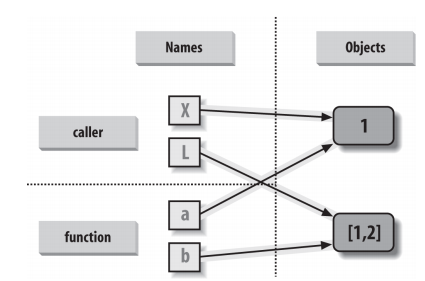
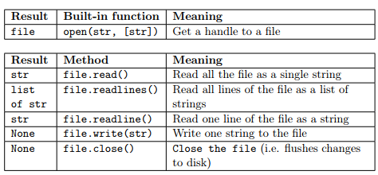

Module 1, Practical 6¶
In this practical we will see how to define functions to reuse code, we will talk about the scope of variables and finally will see how to deal with files in Python.
Functions¶
A function is a block of code that has a name and that performs a task. A function can be thought of as a box that gets an input and returns an output.
Why should we use functions? For a lot of reasons including:
Reduce code duplication: put in functions parts of code that are needed several times in the whole program so that you don’t need to repeat the same code over and over again;
Decompose a complex task: make the code easier to write and understand by splitting the whole program into several easier functions;
both things improve code readability and make your code easier to understand.
The basic definition of a function is:
def function_name(input) :
#code implementing the function
...
...
return return_value
Functions are defined with the def keyword that proceeds the function_name and then a list of parameters is passed in the brackets. A colon : is used to end the line holding the definition of the function. The code implementing the function is specified by using indentation. A function might or might not return a value. In the first case a return statement is used.
Consider the following example in which we want to compute the sum of the square root of the values in lists X, Y, Z.
[1]:
import math
X = [1, 5, 4, 4, 7, 2, 1]
Y = [9, 4, 7, 1, 2]
Z = [9, 9, 4, 7]
sum_x = 0
sum_y = 0
sum_z = 0
for el in X:
sum_x += math.sqrt(el)
for el in Y:
sum_y += math.sqrt(el)
for el in Z:
sum_z += math.sqrt(el)
print(X, "sum_sqrt:", sum_x)
print(Y, "sum_sqrt:", sum_y)
print(Z, "sum_sqrt:", sum_z)
[1, 5, 4, 4, 7, 2, 1] sum_sqrt: 12.296032850937475
[9, 4, 7, 1, 2] sum_sqrt: 10.059964873437686
[9, 9, 4, 7] sum_sqrt: 10.64575131106459
In the above code there is a lot of duplication. Let’s try and rewrite the above code taking advantage of functions.
[2]:
import math
X = [1, 5, 4, 4, 7, 2, 1]
Y = [9, 4, 7, 1, 2]
Z = [9, 9, 4, 7]
# This function does not return anything
def print_sum_sqrt(vals):
tmp = 0
for el in vals:
tmp += math.sqrt(el)
print(vals, "sum_sqrt:", tmp)
print_sum_sqrt(X)
print_sum_sqrt(Y)
print_sum_sqrt(Z)
[1, 5, 4, 4, 7, 2, 1] sum_sqrt: 12.296032850937475
[9, 4, 7, 1, 2] sum_sqrt: 10.059964873437686
[9, 9, 4, 7] sum_sqrt: 10.64575131106459
If we want, we can modify print_sum_sqrt to output the values:
[3]:
import math
X = [1, 5, 4, 4, 7, 2, 1]
Y = [9, 4, 7, 1, 2]
Z = [9, 9, 4, 7]
# This function returns the sum
def sum_sqrt(vals):
tmp = 0
for el in vals:
tmp += math.sqrt(el)
return tmp
x = sum_sqrt(X)
y = sum_sqrt(Y)
z = sum_sqrt(Z)
print(X, "sum_sqrt:", x)
print(Y, "sum_sqrt:", y)
print(Z, "sum_sqrt:", z)
# we have the sums as numbers, can use them
print("Sum of all: ", x + y + z)
[1, 5, 4, 4, 7, 2, 1] sum_sqrt: 12.296032850937475
[9, 4, 7, 1, 2] sum_sqrt: 10.059964873437686
[9, 9, 4, 7] sum_sqrt: 10.64575131106459
Sum of all: 33.00174903543975
Example: Define a function that implements the sum of two lists of integers (note that there is no check that the two lists actually contain integers and that they have the same size).
[4]:
def int_list_sum(l1,l2):
"""implements the sum of two lists of integers having the same size
"""
ret =[]
for i in range(len(l1)):
ret.append(l1[i] + l2[i])
return ret
L1 = list(range(1,10))
L2 = list(range(20,30))
print("L1:", L1)
print("L2:", L2)
res = int_list_sum(L1,L2)
print("L1+L2:", res)
res = int_list_sum(L1,L1)
print("L1+L1", res)
L1: [1, 2, 3, 4, 5, 6, 7, 8, 9]
L2: [20, 21, 22, 23, 24, 25, 26, 27, 28, 29]
L1+L2: [21, 23, 25, 27, 29, 31, 33, 35, 37]
L1+L1 [2, 4, 6, 8, 10, 12, 14, 16, 18]
Note that once the function has been defined, it can be called as many times as wanted with different input parameters. Moreover, a function does not do anything until it is actually called. A function can return 0 (in this case the return value would be “None”), 1 or more results. Notice also that collecting the results of a function is not mandatory.
Example: Let’s write a function that, given a list of elements, prints only the even-placed ones without returning anything.
[5]:
def get_even_placed(myList):
"""returns the even placed elements of myList"""
ret = [myList[i] for i in range(len(myList)) if i % 2 == 0]
print(ret)
L1 = ["hi", "there", "from","python","!"]
L2 = list(range(13))
print("L1:", L1)
print("L2:", L2)
print("even L1:")
get_even_placed(L1)
print("even L2:")
get_even_placed(L2)
L1: ['hi', 'there', 'from', 'python', '!']
L2: [0, 1, 2, 3, 4, 5, 6, 7, 8, 9, 10, 11, 12]
even L1:
['hi', 'from', '!']
even L2:
[0, 2, 4, 6, 8, 10, 12]
Note that the function above is polymorphic (i.e. it works on several data types, provided that we can iterate through them).
Example: Let’s write a function that, given a list of integers, returns the number of elements, the maximum and minimum.
[6]:
"""easy! this changes the original list!!!"""
def get_info(myList):
"""returns len of myList, min and max value
(assumes elements are integers) but it would work with str"""
myList.sort()
return len(myList), myList[0], myList[-1] #return type is a tuple
A = [7, 1, 125, 4, -1, 0]
print("Original A:", A, "\n")
result = get_info(A)
print("Len:", result[0], "Min:", result[1], "Max:",result[2], "\n" )
print("A now:", A)
Original A: [7, 1, 125, 4, -1, 0]
Len: 6 Min: -1 Max: 125
A now: [-1, 0, 1, 4, 7, 125]
We need to make a copy if we do not want to affect the caller (see why below):
[39]:
def get_info(myList):
"""returns len of myList, min and max value
(assumes elements are integers) but it would work with str"""
tmp = myList[:] #copy the input list
tmp.sort()
return len(tmp), tmp[0], tmp[-1] #Please, note that the return type is a tuple!
A = [7, 1, 125, 4, -1, 0]
print("Original A:", A, "\n")
result = get_info(A)
print("Len:", result[0], "Min:", result[1], "Max:",result[2], "\n" )
print("A now:", A)
Original A: [7, 1, 125, 4, -1, 0]
Len: 6 Min: -1 Max: 125
A now: [7, 1, 125, 4, -1, 0]
[8]:
def my_sum(myList):
ret = 0
for el in myList:
ret += el # == ret = ret + el
return ret
A = [1,2,3,4,5,6]
B = [7, 9, 4]
s = my_sum(A)
print("List A:", A)
print("Sum:", s)
s = my_sum(B)
print("List B:", B)
print("Sum:", s)
List A: [1, 2, 3, 4, 5, 6]
Sum: 21
List B: [7, 9, 4]
Sum: 20
Importantly enough, a function needs to be defined (i.e. its code has to be written) before it can actually be used otherwise the Python interpreter does not know what to do when the function is actually called with some parameters.
[9]:
A = [1,2,3]
my_sum_new(A)
def my_sum_new(myList):
ret = 0
for el in myList:
ret += el
return ret
---------------------------------------------------------------------------
NameError Traceback (most recent call last)
<ipython-input-9-50f5bebe9695> in <module>
1 A = [1,2,3]
----> 2 my_sum_new(A)
3
4 def my_sum_new(myList):
5 ret = 0
NameError: name 'my_sum_new' is not defined
Namespace and variable scope¶
Namespaces are the way Python makes sure that names in a program are unique and can be safely used without any conflicts. They are mappings from names to objects, or in other words places where names are associated to objects. Namespaces can be considered as the context and in Python are implemented as dictionaries that map the name to the object. According to Python’s reference a scope is a textual region of a Python program, where a namespace is directly accessible, which means that Python will look into that namespace to find the object associated to a name. Four namespaces are made available by Python:
1. **Local**: the innermost that contains local names (inside a function or a class);
2. **Enclosing**: the scope of the enclosing function,
it does not contain local nor global names (nested functions) ;
3. **Global**: contains the global names;
4. **Built-in**: contains all built in names
(e.g. print, if, while, for,...)
When one refers to a name, Python tries to find it in the current namespace, if it is not found it continues looking in the namespace that contains it until the built-in namespace is reached. If the name is not found there either, the Python interpreter will throw a NameError exception, meaning it cannot find the name. The order in which namespaces are considered is: Local, Enclosing, Global and Built-in (LEGB).
Consider the following example:
[10]:
def my_function():
var = 1 #local variable
print("Local:", var)
b = "my string"
print("Local:", b)
var = 7 #global variable
my_function()
print("Global:", var)
print(b)
Local: 1
Local: my string
Global: 7
---------------------------------------------------------------------------
NameError Traceback (most recent call last)
<ipython-input-10-da11a41b34ff> in <module>
8 my_function()
9 print("Global:", var)
---> 10 print(b)
11
NameError: name 'b' is not defined
Variables defined within a function can only be seen within the function. That is why variable b is defined only within the function. Variables defined outside all functions are global to the whole program. The namespace of the local variable is within the function my_function, while outside it the variable will have its global value.
And the following:
[11]:
def outer_function():
var = 1 #outer
def inner_function():
var = 2 #inner
print("Inner:", var)
print("Inner:", B)
inner_function()
print("Outer:", var)
var = 3 #global
B = "This is B"
outer_function()
print("Global:", var)
print("Global:", B)
Inner: 2
Inner: This is B
Outer: 1
Global: 3
Global: This is B
Note in particular that the variable B is global, therefore it is accessible everywhere and also inside the inner_function. On the contrary, the value of var defined within the inner_function is accessible only in the namespace defined by it, outside it will assume different values as shown in the example.
In a nutshell, remember the three simple rules seen in the lecture. Within a def:
1. Name assignments create local names by default;
2. Name references search the following four scopes in the order:
local, enclosing functions (if any), then global and finally built-in (LEGB)
3. Names declared in global and nonlocal statements map assigned names to
enclosing module and function scopes.
Argument passing¶
Arguments are the parameters and data we pass to functions. When passing arguments, there are three important things to bear in mind:
Passing an argument is actually assigning an object to a local variable name;
Assigning an object to a variable name within a function does not affect the caller;
Changing a mutable object variable name within a function affects the caller
Consider the following examples:
[15]:
"""Assigning the argument does not affect the caller"""
def my_f(x):
x = "local value" #local
print("Local: ", x)
x = "global value" #global
my_f(x)
print("Global:", x)
my_f(x)
Local: local value
Global: global value
Local: local value
[16]:
"""Changing a mutable affects the caller"""
def my_f(myList):
myList[1] = "new value1"
myList[3] = "new value2"
print("Local: ", myList)
myList = ["old value"]*4
print("Global:", myList)
my_f(myList)
print("Global now: ", myList)
Global: ['old value', 'old value', 'old value', 'old value']
Local: ['old value', 'new value1', 'old value', 'new value2']
Global now: ['old value', 'new value1', 'old value', 'new value2']
Recall what seen in the lecture:
The behaviour above is because immutable objects are passed by value (therefore it is like making a copy), while mutable objects are passed by reference (therefore changing them effectively changes the original object).
To avoid making changes to a mutable object passed as parameter one needs to explicitely make a copy of it.
Consider the example seen before. Example: Let’s write a function that, given a list of integers, returns the number of elements, the maximum and minimum.
[17]:
def get_info(myList):
"""returns len of myList, min and max value (assumes elements are integers)"""
myList.sort()
return len(myList), myList[0], myList[-1] #return type is a tuple
def get_info_copy(myList):
"""returns len of myList, min and max value (assumes elements are integers)"""
tmp = myList[:] #copy the input list!!!!
tmp.sort()
return len(tmp), tmp[0], tmp[-1] #return type is a tuple
A = [7, 1, 125, 4, -1, 0]
B = [70, 10, 1250, 40, -10, 0, 10]
print("A:", A)
result = get_info(A)
print("Len:", result[0], "Min:", result[1], "Max:",result[2] )
print("A now:", A) #whoops A is changed!!!
print("\n###### With copy now ########")
print("\nB:", B)
result = get_info_copy(B)
print("Len:", result[0], "Min:", result[1], "Max:",result[2] )
print("B now:", B) #B is not changed!!!
A: [7, 1, 125, 4, -1, 0]
Len: 6 Min: -1 Max: 125
A now: [-1, 0, 1, 4, 7, 125]
###### With copy now ########
B: [70, 10, 1250, 40, -10, 0, 10]
Len: 7 Min: -10 Max: 1250
B now: [70, 10, 1250, 40, -10, 0, 10]
Positional arguments¶
Arguments can be passed to functions following the order in which they appear in the function definition.
Consider the following example:
[18]:
def print_parameters(a,b,c,d):
print("1st param:", a)
print("2nd param:", b)
print("3rd param:", c)
print("4th param:", d)
print_parameters("A", "B", "C", "D")
1st param: A
2nd param: B
3rd param: C
4th param: D
Passing arguments by keyword¶
Given the name of an argument as specified in the definition of the function, parameters can be passed using the name = value syntax.
For example:
[19]:
def print_parameters(a,b,c,d):
print("1st param:", a)
print("2nd param:", b)
print("3rd param:", c)
print("4th param:", d)
print_parameters(a = 1, c=3, d=4, b=2)
print("\n###############\n")
print_parameters("first","second",d="fourth",c="third")
print("\n###############\n")
1st param: 1
2nd param: 2
3rd param: 3
4th param: 4
###############
1st param: first
2nd param: second
3rd param: third
4th param: fourth
###############
Arguments passed positionally and by name can be used at the same time, but parameters passed by name must always be to the left of those passed by name. The following code in fact is not accepted by the Python interpreter:
[20]:
def print_parameters(a,b,c,d):
print("1st param:", a)
print("2nd param:", b)
print("3rd param:", c)
print("4th param:", d)
#The following won't work
print_parameters(d="fourth",c="third", "first","second")
#Correct code instead:
print_parameters("first","second", d="fourth",c="third")
File "<ipython-input-20-0aba188b6596>", line 9
print_parameters(d="fourth",c="third", "first","second")
^
SyntaxError: positional argument follows keyword argument
Specifying default values¶
During the definition of a function it is possible to specify default values. The syntax is the following:
def my_function(par1 = val1, par2 = val2, par3 = val3):
Consider the following example:
[21]:
def print_parameters(a="defaultA", b="defaultB",c="defaultC"):
print("a:",a)
print("b:",b)
print("c:",c)
print_parameters("param_A")
print("\n#################\n")
print_parameters(b="PARAMETER_B")
print("\n#################\n")
print_parameters()
print("\n#################\n")
print_parameters(c="PARAMETER_C", b="PAR_B")
a: param_A
b: defaultB
c: defaultC
#################
a: defaultA
b: PARAMETER_B
c: defaultC
#################
a: defaultA
b: defaultB
c: defaultC
#################
a: defaultA
b: PAR_B
c: PARAMETER_C
Another example.
Example. Write a function that rounds a float at a precision (i.e. number of decimals) specified in input. If no precision is specified then the whole number should be returned. Examples:
my_round(1.1717413, 3) = 1.172 my_round(1.1717413, 1) = 1.2 my_round(1.1717413) = 1.17174.
[22]:
import math
def my_round(val, precision = 0):
if precision == 0:
return val
else:
return round(val * 10** precision)/ 10**precision
my_val = 1.717413
print(my_val, " precision 2: ", my_round(my_val,2))
print(my_val, " precision 1: ", my_round(my_val,1))
print(my_val, " precision max: ", my_round(my_val))
print("")
my_val = math.pi
print(my_val, " precision 10: ", my_round(my_val,10))
1.717413 precision 2: 1.72
1.717413 precision 1: 1.7
1.717413 precision max: 1.717413
3.141592653589793 precision 10: 3.1415926536
We can also use the function implemented and apply it to a list of values through list comprehension.
Example: create a list with the square root values of the first 20 integers with 3 digits of precision.
[23]:
import math
def my_round(val, precision = 0):
if precision == 0:
return val
else:
return round(val * 10** precision)/ 10**precision
result = [my_round(math.sqrt(x), 3) for x in range(1,21)]
print(result)
[1.0, 1.414, 1.732, 2.0, 2.236, 2.449, 2.646, 2.828, 3.0, 3.162, 3.317, 3.464, 3.606, 3.742, 3.873, 4.0, 4.123, 4.243, 4.359, 4.472]
As a final example of list comprehension, let’s print only the values of the list result above whose digits sum up to a certain value x. Hint: write another function!
[24]:
import math
def my_round(val, precision = 0):
if precision == 0:
return val
else:
return round(val * 10** precision)/ 10**precision
#version without list comprehension
def sum_of_digits_noList(num, total):
tmp = str(num)
tot = 0
for d in tmp:
if d != ".":
tot += int(d)
if tot == total:
return True
else:
return False
#with list comprehension
def sum_of_digits(num, total):
tmp = [int(x) for x in str(num) if x != "."]
return sum(tmp) == total
result = [my_round(math.sqrt(x), 3) for x in range(1,21)]
print("sum is 10:", [x for x in result if sum_of_digits(x, 10)])
print("sum is 13:",[x for x in result if sum_of_digits(x, 13)])
sum is 10: [1.414, 4.123]
sum is 13: [1.732, 2.236, 4.243]
File input and output¶
Files are non volatile data stored at specific locations in memory. To read or write from/to a file, one first needs to create a reference to the file. This is called the handle to the file.
Recall from the lecture that Python provides programmers with the following functions and methods:
To read or write to a file one first needs to open it with the python’s built-in function open that returns a handler to the file. The handler can then be used to read or write the content of the file.
Example: Download the file textFile.txt to your favourite location and read it from python, printing out all its content. NOTE: the path of your file might be different from mine.
[25]:
fh = open("file_samples/textFile.txt", "r") #read-only mode
print("--- File content ---")
for line in fh:
print(line, end ="") #no need to add a new line
fh.close()
print("\n--- File closed ---")
--- File content ---
Hi everybody,
This is my first file
and it contains a total of
four lines!
--- File closed ---
The usual interaction with files is done in three steps: open the file, read or write its content, close the file.
Opening a file¶
As said, a file needs to be opened before working with it. This can be done by using the function open.
The standard syntax is:
file_handle = open("file_name", "file_mode")
where file_name is a string representing the path to reach the file (either absolute or relative to the .py module we are writing) and file_mode is the string representing the opening mode of the file. file_mode can be:
"r"which is the default and opens the file in read only mode;"w"write only mode. Note that this would overwrite an existing file;"a"append mode (i.e. add information at the end of an existing file or create a new file)"t"text mode. The file will be a text file (this is the default)."b"binary mode. The file will not be a textual file."x"exclusive creation. This will fail if the file already exists."+"update mode. The file will be opened with read and write permissions.
Opening modes can be combined (ex. "ra" would read and append, "wb" would write (and overwrite) a binary file, "r+b" read and write a binary file).
Closing a file¶
A opened file always needs to be closed. The basic syntax is:
file_handle.close()
this will free up resources and will not allow any more operations on the same file.
The following code will in fact crash, because the file has been closed and therefore no more operations can be performed on it.
[26]:
fh = open("file_samples/textFile.txt", "r") #read-only mode
print("--- File content ---")
for line in fh:
print(line, end ="") #no need to add a new line
fh.close()
print("\n--- File closed ---")
print(fh.readline())
--- File content ---
Hi everybody,
This is my first file
and it contains a total of
four lines!
--- File closed ---
---------------------------------------------------------------------------
ValueError Traceback (most recent call last)
<ipython-input-26-0367c74d60af> in <module>
10 print("\n--- File closed ---")
11
---> 12 print(fh.readline())
ValueError: I/O operation on closed file.
An alternative way to open and implicitly close the file is by using the with keyword. The basic syntax is:
with open("file") as f:
#do some stuff
#until done with it
The previous example would become:
[27]:
print("--- File content ---")
with open("file_samples/textFile.txt", "r") as f:
for line in f:
print(line, end ="") #no need to add a new line
print("\n--- File closed ---")
--- File content ---
Hi everybody,
This is my first file
and it contains a total of
four lines!
--- File closed ---
Reading from a file¶
There are several ways for reading a file that has been opened in read mode having file handle fh:
content = fh.read()reads the whole file in the content string. Good for small and not structured files.line = fh.readline()reads the file one line at a time storing it in the stringlinelines = fh.readlines()reads all the lines of the file storing them as a listlinesusing the iterator:
for line in f:
#process the information
which is the most convenient way for big files.
Let’s see some examples. Note that to restart reading a file from the beginning we need to close it and open it gain.
[28]:
fh = open("file_samples/textFile.txt", "r") #read-only mode
content = fh.read()
print("--- Mode1 (the whole file in a string) ---")
print(content)
fh.close()
print("")
print("--- Mode2 (line by line) ---")
with open("file_samples/textFile.txt","r") as f:
print("Line1: ", f.readline(), end = "")
print("Line2: ", f.readline(), end = "")
print("")
print("--- Mode3 (all lines as a list) ---")
with open("file_samples/textFile.txt","r") as f:
print(f.readlines())
print("")
print("--- Mode4 (as a stream) ---")
with open("file_samples/textFile.txt","r") as f:
for line in f:
print(line, end = "")
--- Mode1 (the whole file in a string) ---
Hi everybody,
This is my first file
and it contains a total of
four lines!
--- Mode2 (line by line) ---
Line1: Hi everybody,
Line2: This is my first file
--- Mode3 (all lines as a list) ---
['Hi everybody,\n', 'This is my first file\n', 'and it contains a total of\n', 'four lines!']
--- Mode4 (as a stream) ---
Hi everybody,
This is my first file
and it contains a total of
four lines!
Writing to a file¶
To write some data to a file it must first be opened in write mode (i.e. “w”) or append mode (“a”, “+”). The actual writing can be performed by the method write that has the following basic syntax:
file_handle.write(data_to_be_written)
To make sure all data is written to the file, we must remember to close the file after writing on it.
Example: Given the matrix represented as list of lists, M = [[1,2,3], [4,5,6], [7,8,9]] let’s write it on a file my_matrix.txt as \(\begin{matrix}1 & 2 & 3\\4 & 5 & 6\\7 & 8 & 9\end{matrix}\)
[45]:
M = [[1,2,3], [4,5,6], [7,8,9]]
with open("file_samples/my_matrix.txt", "w") as f:
for line in M:
str_line = [str(x) for x in line] #to make this "joinable"
f.write(" ".join(str_line))
f.write("\n")
#no need to put the close because we used with
#Equivalent code (without with clause):
M = [[1,2,3], [4,5,6], [7,8,9]]
f = open("file_samples/my_matrix.txt", "w")
for line in M:
str_line = [str(x) for x in line]
f.write(" ".join(str_line))
f.write("\n")
f.close()
String formatting with format¶
Strings can be formatted with the method format. A lot of information on the use of format can be found here.
Format can be used to add values to a string in specific placeholders (normally defined with the syntax {}) or to format values according to the user specifications (e.g. number of decimal places for floating point numbers).
In the following we will see some simple examples.
[30]:
#simple empty placeholders
print("I like {} more than {}.\n".format("python", "java"))
#indexed placeholders, note order
print("I like {0} more than {1} or {2}.\n".format("python", "java", "C++"))
print("I like {2} more than {1} or {0}.\n".format("python", "java", "C++"))
#indexed and named placeholders
print("I like {1} more than {c} or {0}.\n".format("python", "java", c="C++"))
#with type specification
import math
print("The square root of {0} is {1:f}.\n".format(2, math.sqrt(2)))
#with type and format specification (NOTE: {.2f})
print("The square root of {0} is {1:.2f}.\n".format(2, math.sqrt(2)))
#spacing data properly
print("{:2s}|{:5}|{:6}".format("N","sqrt","square"))
for i in range(0,20):
print("{:2d}|{:5.3f}|{:6d}".format(i,math.sqrt(i),i*i))
I like python more than java.
I like python more than java or C++.
I like C++ more than java or python.
I like java more than C++ or python.
The square root of 2 is 1.414214.
The square root of 2 is 1.41.
N |sqrt |square
0|0.000| 0
1|1.000| 1
2|1.414| 4
3|1.732| 9
4|2.000| 16
5|2.236| 25
6|2.449| 36
7|2.646| 49
8|2.828| 64
9|3.000| 81
10|3.162| 100
11|3.317| 121
12|3.464| 144
13|3.606| 169
14|3.742| 196
15|3.873| 225
16|4.000| 256
17|4.123| 289
18|4.243| 324
19|4.359| 361
Exercises¶
Implement a function that takes in input a string representing a DNA sequence and computes its reverse-complement. Take care to reverse complement any character other than (A,T,C,G,a,t,c,g) to N. The function should preserve the case of each letter (i.e. A becomes T, but a becomes t). For simplicity all bases that do not represent nucleotides are converted to a capital N. Hint: create a dictionary revDict with bases as keys and their complements as values. Ex. revDict = {“A” : “T” , “a” : “t”, …}.
Apply the function to the DNA sequence “ATTACATATCATACTATCGCNTTCTAAATA”
Apply the function to the DNA sequence “acaTTACAtagataATACTaccataGCNTTCTAAATA”
Apply the function to the DNA sequence “TTTTACCKKKAKTUUUITTTARRRRRAIUTYYA”
Check that the reverse complement of the reverse complement of the sequence in 1. is exactly as the original sequence.
Show/Hide Solution
Write the following python functions and test them with some parameters of your choice:
getDivisors: the function has a positive integer as parameter and returns a list of all the positive divisors of the integer in input (excluding the number itself). Example:
getDivisors(6) --> [1,2,3]checkSum: the function has a list and an integer as parameters and returns True if the sum of all elements in the list equals the integer, False otherwise. Example:
checkSum([1,2,3], 6) --> True,checkSum([1,2,3],1) --> False.checkPerfect: the function gets an integer as parameter and returns True if the integer is a perfect number, False otherwise. A number is perfect if all its divisors (excluding itself) sum to its value. Example:
checkPerfect(6) --> Truebecause 1+2+3 = 6. Hint: use the functions implemented before.
Use the three implemented functions to write a fourth function:
getFirstNperfects: the function gets an integer N as parameter and returns a dictionary with the first N perfect numbers. The key of the dictionary is the perfect number, while the value of the dictionary is the list of its divisors. Example: getFirstNperfects(1) --> {6 : [1,2,3]}
Get and print the first 4 perfect numbers and finally test if 33550336 is a perfect number.
WARNING: do not try to find more than 4 perfect numbers as it might take a while!!!
Show/Hide Solution
A pangram is a sentence that contains all the letters of the alphabet at least once (let’s ignore numbers and other characters for simplicity).
Write a function that gets a text in input and returns True if it is a pangram.
Write a function that computes how many unique characters an input sentence has;
Modify the function at 1. in such a way that a user can specify an alphabet and check if the provided text is a pangram in that reference alphabet.
Show/Hide Solution
A restriction enzyme is an enzyme that cleaves DNA into fragments at or near specific recognition sites within molecules known as restriction sites. A lot of restriction enzymes exist that cleave the DNA at different sites. For simplicity let’s focus on only the 5’-3’ orientation of DNA. Consider the following enzymes, stored as a dictionary:
restriction_enzymes = {'EcoRI' : ('GAATTC','G','AATTC'), 'TaqI': ('TCGA','T','CGA'), 'PvII: ('CAGCTG','CAG','CTG')}
meaning for example that enzyme ‘EcoRI’ would split a sequence xxxxGAATTCxxxxx into the two sequences xxxxG and AATTCxxxxx.
Implement a function (restrict_DNA(sequence, enzyme)) that takes a DNA string in input, and the specification of a restriction enzyme (e.g. “TaqI”) and returns a list with all the possible pairs of cleaved DNA sequences.
Extend this code in such a way that it can process a list of DNA sequences rather than a single one and returns a list of lists (write a function restrict_DNA_sequences(list_of_sequences, enzyme). If the enzyme specified in input is not recognized, the script should output a warning message without crashing.
Test your function(s) with the following calls:
seq = "TACTACCTACGAATTCAAATGAATTCCCTTAAGAATTCATTCGATCGATTAAAGAGCTGATTAGAATATCCAGCTG"
print("Restriction with EcoRI")
print(restrict_DNA(seq, 'EcoRI'))
print("\nRestriction with PvII")
print(restrict_DNA(seq, 'PvII'))
print("\nRestriction with TaqI")
R = restrict_DNA(seq, 'TaqI')
print(R)
print("\nSecond restriction with EcoRI")
print(restrict_DNA_sequences(R, 'EcoRI'))
print(restrict_DNA_sequences(R, 'MyEnzyme'))
Show/Hide Solution
Blast is a well known tool to perform sequence alignment between a pool of query sequences and a pool of subject sequences. Among the other formats, it can produce a text output that is tab separated (
\t) capturing user specified output. Comments in the file are written in lines starting with an hash key (“#”). A sample blast output file is blast_sample.tsv, please download it and spend some time to look at it. The meaning of all columns is specified in the file header:
# Fields: query id, subject id, query length, % identity, alignment length,
identical, gap opens, q. start, q. end, s. start, s. end, evalue
Write a python program with:
A function (readBlast) that reads in the blast .tsv file (storing each line in a list) ignoring comment lines;
A function (filterBlast) that gets a string in input representing a blast alignment and filters it according to the user specified parameters below. It should return True if all filters are passed, false otherwise:
% identity > identity_threshold (default 0%)
evalue < evalue_thrshold (default 0.5)
alignment length / query length > align_threshold (default 0)
The program should report how many entries out of the total passed the filter.
Test several combinations of filters like:
identity_theshold = 97, all others default
evalue_threshold = 0.5, all others default
align_threshold = 0.9, all others default
align_threshold = 0.9, identity_threshold = 97
Show/Hide Solution
Fasta is a format representing nucleotide or peptide sequences. Each entry of a fasta file starts with a “>” followed by the identifier of the entry (the header of the sequence). All the lines following a header represent the sequence belonging to that identifier. Here you can find an example of fasta file: contigs82.fasta. Please download it and have a look at its content.
Write a python program that reads a fasta file and prints to screen the identifier of the sequence and the frequency of all the characters in the sequence (note that sequences might contain all IUPAC codes in case of SNPs). Hint: use a dictionary.
Sample output:
MDC020656.85 :
N has freq 0.052
T has freq 0.273
A has freq 0.308
G has freq 0.203
C has freq 0.163
MDC001115.177 :
N has freq 0.018
G has freq 0.157
A has freq 0.302
T has freq 0.316
C has freq 0.207
...
Show/Hide Solution
Write a python program that reads two files. The first is a one column text file (contig_ids.txt) with the identifiers of some contigs that are present in the second file, which is a fasta formatted file (contigs82.fasta). The program will write on a third, fasta formatted file (e.g. filtered_contigs.fasta) only those entries in contigs82.fasta having identifier in contig_ids.txt.
Show/Hide Solution
Write a python program that:
reads the text file sample_text.txt and stores in a dictionary how many times each word appears (hint: the key is the word and the count is the value);
prints to screen how many lines the file has and how many distinct words are in the file;
writes to a text file (scientist_histo.csv) the histogram of the words in comma separated value format (i.e. word,count). Words must be sorted alphabetically;
Finally, write a function that prints to screen (alphabetically) all the words that have a count higher than a threshold N and apply it with N = 5.
Show/Hide Solution